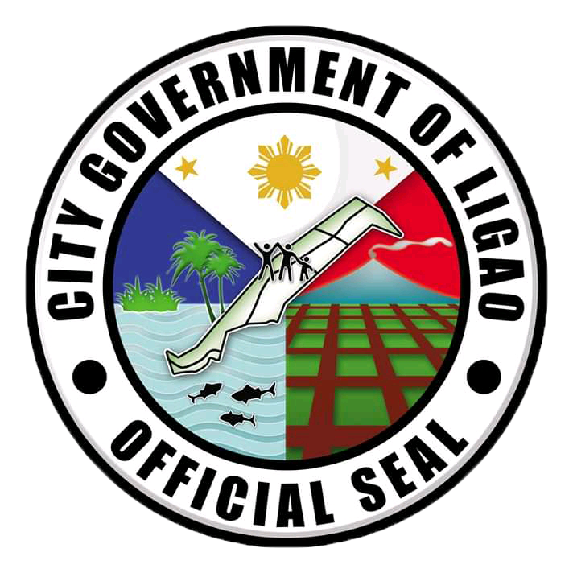

CITY OF GOVERNMENT OF LIGAO
Ligao, officially the City of Ligao, (Central Bicolano: Ciudad kan Ligao; Tagalog: Lungsod ng Ligao), or simply referred to as Ligao City, is a 4th class city in the province of Albay, Philippines. According to the 2015 census, it has a population of 111,399 people. Most of the city's economy came from agriculture sector.
Location within the Philippines
Coordinates: 13°13′N 123°31′E
Ligao is geographically located betweeligao-mapn 13 to 14 degrees latitude and 123 to 124 degrees longitude. It is situated within the central part of the 3rd District of Albay Province and is bounded on the North by the Municipality of Oas, on the South by the Municipality of Guinobatan, on the East by the City of Tabaco and on the West by the Municipality of Pioduran and Panganiran Bay. Its strategic location makes it the converging point of population movement coming from various municipalities. Ligao City is about 27 kms from the Provincial Capitol of Albay, 30 kms. from Legazpi City and 525 kms. from Manila.
Ligao City has a total land area of 24, 640 hectares that accounts for 9.65 percent of the total land area of Albay Province. It is the second largest component LGU in Albay in terms of land area, next only to Oas. The city’s area is spread out in 11 urban barangays which occupy almost 1,269 has. (5.15%), 41 rural barangays with 19,332 has. (78.46%) and 3 coastal barangays with 4,039 has. (16.39%). The biggest barangay is Maonon having an area of 2, 493.57 hectares and the smallest is Barangay Dunao with an area of 29.57 hectares. The municipal waters span an area of about 126 square kilometers with a coastline length of approximately 11 kilometers.
Ligao City’s land is classified into alienable and disposable lands with 91% of the total land area and forest lands with 9% of the land area. This is characterized by topographic profiles ranging from slopes of 0-50%. The urban areas have a 0-3% slopes.
The area of Ligao City belongs to a combination of Types II and IV climate, and these are characterized by rainy season from July to December and dry season from January to June.
The soils are volcanic in origin and these are generally fertile and suited for a wide range of agricultural crops. The soil types found in Ligao are the loam, clay and sandy and the undifferenciated mountain soils
DEMOGRAPHY
In 2015 Census of Population, the city’s population was placed at 111, 399. It grew at an annual growth rate of 1.24% between 2010 and 2015. The urban population of 30,636 constitutes 27.5% of the total population. The larger share of the population (80,763) is found in the rural areas since the city’s economy is basically agriculture.
The average members in a family in Ligao City is 5 and the total household is 22, 280. Ligao City’s population density is placed at 452 persons per square kilometer.
The dialects varies as the people who came to settle, from Ilacano to Kapampangan to Tagalog, Visayan and even Muslim traders. However, Ligao City has its own distinct dialect which differs in pronunciation, meaning and spelling from other Bicol dialects.
In terms of religious affiliation, Roman Catholic is still the dominant religion in the city. Religious tolerance is observed among the Ligaoeños as indicated by various denominations present in the city such as Iglesia ni Kristo, Seventh Day Adventist, Church of the Latter Day Saints, Jehova’s Witness, Born Again Christians and other religious sects.
SOCIAL SECTOR
Ligao City is part of the 3rd District’s Inter-Local Health Zone called JOLLIPPOGui (Jovellar, Libon, Ligao, Polangui, Pioduran, Oas and Guinobatan), Patients from these areas can avail, among others, the services from the 25-bed Josefiina Belmonte Duran Memorial District Hospital (JBDMDH) located in Barangay Tuburan, this city, in addition to the 3 privately-owned hospitals operating in the city. There are also 6 lying-in facilities and 13 health stations strategically-located in different barangays that assist the City’s main Health Center in the delivery of quality basic health services even to the remotest barangays.
The City is also operating a Dental Mobile Clinic that visits barangays and schools to perform dental services especially to school children.
Ligao was accorded full City Division stature in September 2005. The City’s public elementary school system is divided into 3 districts with 55 schools and thirteen (13) privately-operated schools.
There are also 12 public secondary schools that are directly under the Division Office including the Bicol Regional Science High School that is located in Barangay Tuburan. Four (4) Private Senior High Schools scattered in the poblacion areas are also operating.
There are five (5) higher learning institutions in Ligao City. One of these is the LGU-subsidized Ligao Community College (LiComCo) which had just transferred to its own campus in 2016. Another is the privately-run Infotech Development System Colleges in Barangay Dunao.
Three others are Technical-Vocational Schools, two of which are privately-run – the RENET Technological College and the Computer Arts Technology. The other one – the Information Technology Center is City-operated which provides computer literacy programs for free to Ligao City residents as well as those from nearby towns.
At present, the City has established and is maintaining 81 day care centers and one National Child Development Center. These are spread out in all 55 barangays of the city.
ECONOMY
Ligao City is 4th class city whose economy is anchored on agriculture. Majority of its population depends on farming and its related industries. Majority of the population are tenants and only a small portion are landlords/owners of the land they till. Coconut is the most extensively planted perennial crop in the city followed by rice and corn and copra is the prime commodity. Other significant crops planted are vegetables, bananas, root crops and legumes.
Major industries include piggery, poultry, livestock production, manufacturing, feed mill, rice mill, concrete products, handicrafts, noodles making, food processing and coco-based products.
Wholesalers and retailers are the most predominant commercial establishments in the City. There are 3 commercial banks, 3 rural banks, 3 finance cooperatives and 25 other financial institutions such as micro-finance institutions, remittance center and foreign exchange dealers operating in the City.